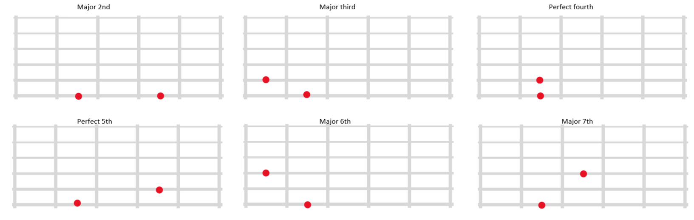
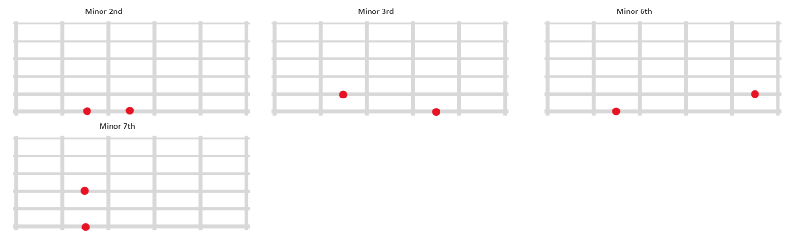

note this page is meant to be practiced 5 min a day if you do more you wont learn as much.You donot need to know music theory at all, all you need to know is the concept of an interval in music. An interval is the distance between two notes
first you have to use nemotecnia to memorize the intervals sounds. you can make a chart with your own songs, these are mine.
| Ascending | Descending | |
|---|---|---|
| major 2nd | happy birthday | three blind mice |
| major 3rd | something | summer time |
| perfect 4th | oh christmas tree | I've Been Working on the Railroad |
| perfect 5th | twinkle twinkle little star | flinstones openning |
| major 6th | frank sinatra - my way | Barrett Sisters - Nobody Knows The Trouble |
| major 7th | aha - take on me | Jo Stafford - I Love You |
| perfect 8th | somewhere over the raimbow | there is no bussiness like show businnes |
| Ascending | Descending | |
|---|---|---|
| minor 2nd | jaws | Joy To The World |
| minor 3rd | Johannes Brahms - Lullaby | Barney's oppening |
| major 6th | love story | love story |
| major 7th | celine dion - somewhere | lady jane - rolling stones |
| tritone | The Beatles - And I Love Her | yyz - rush |
now you need to practice 5 minutes each day you can do it using the page called "tonedear"
Sed nisi. Nulla quis sem at nibh elementum imperdiet. Duis sagittis ipsum. Praesent mauris. Fusce nec tellus sed augue semper porta. Mauris massa.Sed nisi. Nulla quis sem at nibh elementum imperdiet. Duis sagittis ipsum. Praesent mauris. Fusce nec tellus sed augue semper porta. Mauris massa.Sed nisi. Nulla quis sem at nibh elementum imperdiet. Duis sagittis ipsum. Praesent mauris.
 to practice this 5 min a day you may use this app
Vestibulum lacinia arcu eget nulla. Class aptent taciti sociosqu ad litora torquent per conubia nostra.
intervals progress1:
sing and play , simultaneously
sing one note [V]
sing 2 notes in a row [V]
sing 3 notes in a row [V]
more than 4 notes in a row [need practice]
Vestibulum lacinia arcu eget nulla. Class aptent taciti sociosqu ad litora torquent per conubia nostra.
Vestibulum lacinia arcu eget nulla. Class aptent taciti sociosqu ad litora torquent per conubia nostra.
Vestibulum lacinia arcu eget nulla. Class aptent taciti sociosqu ad litora torquent per conubia nostra.
Vestibulum lacinia arcu eget nulla. Class aptent taciti sociosqu ad litora torquent per conubia nostra.